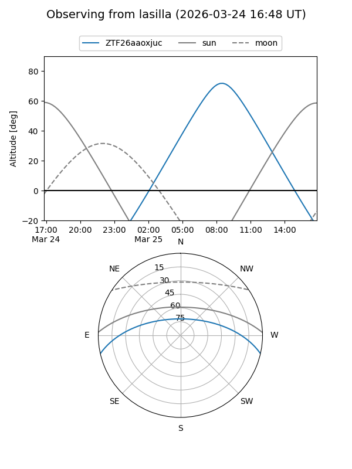
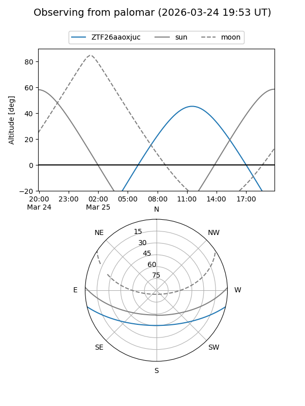

ZTF26aaoxjuc
Target ZTF26aaoxjuc at 2026-03-25 12:19
Aliases and brokers:
FINK: link
Lasair: link
ALeRCE: link
alt names
ZTF26aaoxjuc (ztf,fink_ztf)
Coordinates:
equatorial (ra, dec) = 238.7142,-11.12256
equatorial (HMS+DMS) = 15:54:51.40,-11:07:21.23
galactic (l, b) = (358.4655,+31.34925)
Flags:
Photometry:
last ztfg=15.94, ztfr=14.98
1 ztfg, 1 ztfr detections
Lightcurve
Visibility


Additional plots